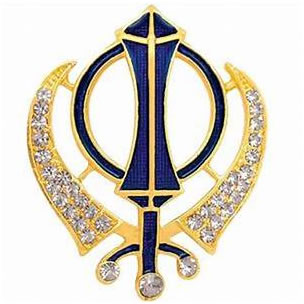
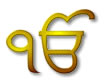

Sikhism


Khanda |
 | The Khanda is the symbol of the Sikhs, as the Cross is to Christians or the Star of David is to Jews. It reflects some of the fundamental concepts of Sikhism. The symbol derives its name from the double-edged sword (also called a Khanda) which appears at the center of the logo. This double-edged sword is a metaphor of Divine Knowledge, its sharp edges cleaving Truth from Falsehood. The circle around the Khanda is the Chakar. The Chakar being a circle without a beginning or and end symbolizes the perfection of God who is eternal. The Chakar is surrounded by two curved swords called Kirpans. These two swords symbolize the twin concepts of Meeri and Peeri - Temporal and Spiritual authority introduced by Guru Hargobind. They emphasize the equal emphasis that a Sikh must place on spiritual aspirations as well as obligations to society.
|
Nishan Sahib |
The Nishan Sahib, the flag of the Sikh nation, is made from a cotton or silk cloth and is triangular in shape. The Nishan Sahib symbolises the independant sovereignty of the Sikhs. The Nishan Sahib, that is in vogue today, is supported by a metal or timber pole with a Khanda, a double edged sword, fixed at its top. |
|
Ik Onkar
|
 | "There is Only One God". The first two words in the Guru Granth Sahib & one of the cornerstones of Sikhism. They appear at the beginning of the Mul Mantra written by Guru Nanak describing the qualities of God in the Japji.
|
s